PDO与异常
1. PDO的基本概念
为什么使用PDO
在WEB开发中，能够使用的数据库不仅仅只有MYSQL，还可能使用其他的数据库，比如：ORACLE、FIREBIRD、MSSQL等。
在PHP程序中，我们执行的是相同的操作，但是所写的操作函数却不一样，以连接数据库操作为例：
MySQLi：mysqli_connect
MSSQL：mssql_connect
ORACLE：oci_connect
所以，当我们要切换数据库时，就必须更换为相应扩展的操作函数
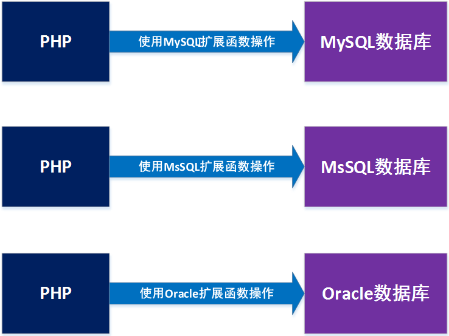
这无疑将提高程序人员操作的门槛，如果需要在项目中更换数据库或者增加不同的数据库，那么一方面我们需要学习不同的数据库操作函数，非常麻烦；另一方面操作功能多了维护起来也会增加负担。
然而PDO却给我们提供了一个方便的操作方式，我们不再需要学习市面上各种各样的数据库操作，只需要学会使用PDO，那么就可以通过PDO来达到使用相同的操作方法，改变个别参数值，就能达到操作不同类型数据库的目的。
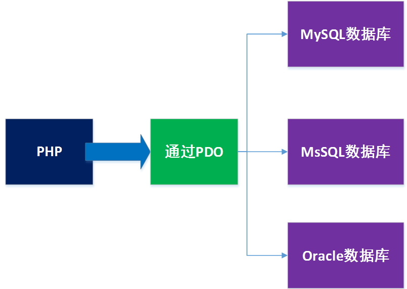
什么是PDO
PDO：PHP Data Object 即 PHP数据==对象==
概念：PDO即PHP中专门用来操作数据库的一套==扩展==。
PDO在手册中的位置：
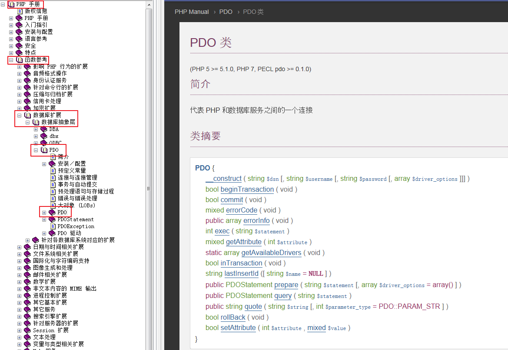
2. ==PDO的基本操作==
开启PDO扩展
第一步，打开php.ini配置文件，确认extension_dir配置项是否正确，
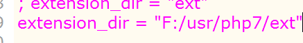
第二步，开启php_pdo_mysql.dll扩展配置项，
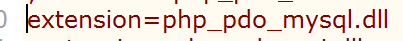
第三步，确认在extension_dir所配置的目录下存在php_pdo_mysql.dll文件，
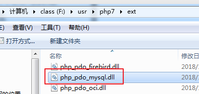
第四步，重启apache，查看pdo_mysql确实开启成功。
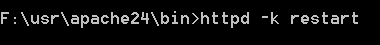
通过phpinfo查看扩展是否开启成功，如下图所示，说明开启成功。
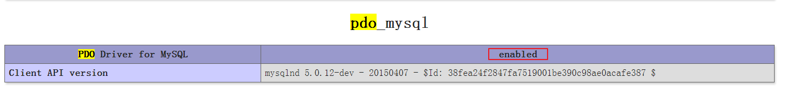
使用PDO实现连库基本操作
引言：我们可以通过实例化PDO类的对象，来达到实现连库基本操作的目标。
一旦实例化PDO类的对象，则PDO类中的==构造方法==将会被PHP自动调用执行，所以我们需要先了解一下PDO中的构造方法：
__construct(基本参数， 数据库帐号， 数据库密码) 负责初始化连库基本操作
参数详解：
基本参数： 包含==数据库类型==，数据库==IP地址==，==端口号==，==字符集==和==默认的数据库==名
基本参数的格式：’数据库类型：==host\===IP地址==；port\===端口号==；charset\===字符集==；dbname\===数据库名’
==演示案例==：实例化PDO类的对象实现连库基本操作
code2.php
1 | $dsn = 'mysql:host=localhost;port=3306;charset=utf8;dbname=test';//连库基本参数 |
访问code2.php，效果为
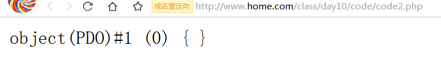
==小结==：
- 实例化PDO类的对象，其实一次性完成了连接数据库、选择默认的数据库、设置字符集操作；
使用PDO实现设置操作（增删改）
涉及的方法：
exec(SQL语句) 执行增删改操作SQL语句
==需求==：完成以下操作
- 使用PDO，向test数据库中的cz_user表实现新增一条数据；
- 使用PDO，向test数据库中的cz_user表实现修改id=8的数据name值为’小红帽’；
- 使用PDO，删除test数据库中的cz_user表id为1的数据；
==解答==：构建名为codex1.php的文件，代码如下：
1 | $dsn = 'mysql:host=localhost;port=3306;charset=utf8;dbname=test';//连库基本参数 |
==小结==：
- 我们可以通过调用exec方法实现增删改操作；
使用PDO实现查询操作
涉及的方法：
【PDO类中】
query(SQL语句) 执行查询操作SQL语句
【PDOStatement类中】
fetch(解析类型) 一次解析一行数据
fetchAll() 一次性解析所有数据
rowCount() 获得查询出来的数据的总行数
columnCount() 获得查询出来的数据的总列数（字段总个数）
fetchObject() 一次解析一行数据，数据为对象类型
==需求==：完成以下操作
- 使用PDO，查询test数据库中的cz_user表id<3的数据；
- 使用PDO，查询test数据库中的cz_user表id<7的所有数据；
- 使用PDO，查询test数据库中的cz_user表id<7的数据一共有几行；
- 使用PDO，查询test数据库中的cz_user表id<7的数据一共有几列；
- 使用PDO中的fetchObject方法，查询test数据库中的cz_user表id=6的数据，查看打印效果；
==解答1==：构建名为code4.php的文件，代码如下：
1 | $dsn = 'mysql:host=localhost;port=3306;charset=utf8;dbname=test';//连库基本参数 |
访问code4.php的效果：
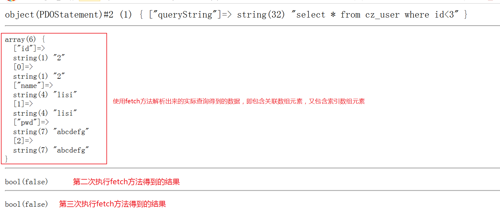
==解答1小结==：
在程序中如果需要查询一条数据，我们首先需要使用pdo对象调用query方法执行查询SQL语句；然后再使用query方法返回的对象调用fetch方法解析出实际查询的一条数据；
上面的效果中，之所以第二次和第三次调用fetch方法返回为false，是因为本身查询语句只查了一条数据，所以第一次解析得到数据后，再去执行fetch，则只能返回false；
fetch方法第一个参数详解：
类常量PDO::FETCH_ASSOC 解析关联类型的数组数据
类常量PDO::FETCH_NUM 解析索引类型的数组数据
类常量PDO::FETCH_BOTH 解析得到的数组数据即包含关联类型元素又包含索引类型元素(默认)
类常量PDO::FETCH_OBJ 解析对象类型的数组数据
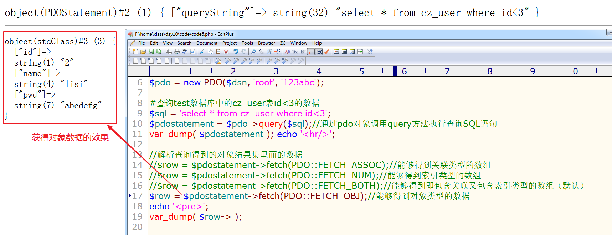
==解答2==：构建名为code7.php的文件，代码如下：
1 | $dsn = 'mysql:host=localhost;port=3306;charset=utf8;dbname=test';//连库基本参数 |
==解答2小结==：
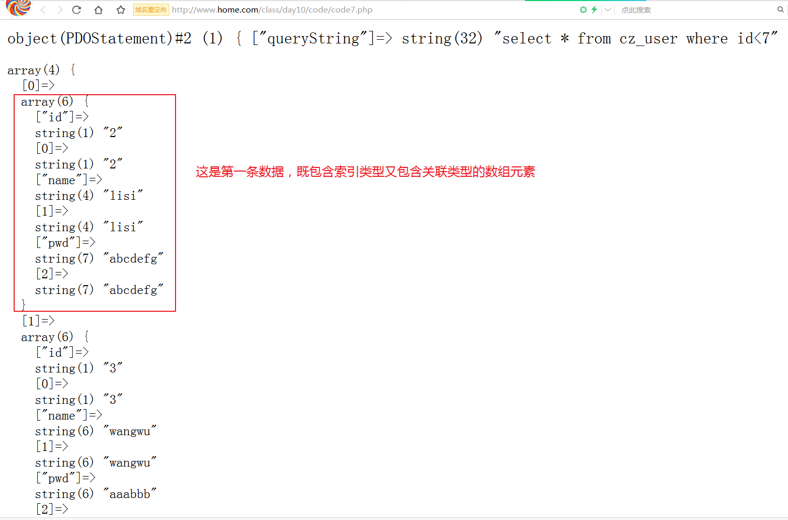
==解答3==：构建名为code8.php的文件，代码如下：
1 | $dsn = 'mysql:host=localhost;port=3306;charset=utf8;dbname=test';//连库基本参数 |
==解答3小结==：
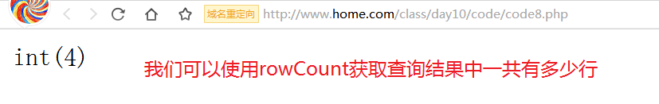
==解答4==：构建名为code9.php的文件，代码如下：
1 | $dsn = 'mysql:host=localhost;port=3306;charset=utf8;dbname=test';//连库基本参数 |
==解答4小结==：
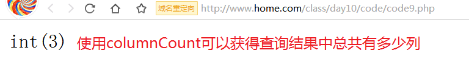
==解答5==：构建名为code10.php的文件，代码如下：
1 | $dsn = 'mysql:host=localhost;port=3306;charset=utf8;dbname=test';//连库基本参数 |
==解答5小结==：
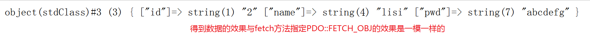
3. ==PDO中的事务==
MYSQL客户端中的事务
我们以zhangsan向lisi借钱为例子，如果要想在数据库实现zhangsan向lisi借100元钱，则过程应该是：
首先lisi的money需要减少100，必须要执行成功如下的SQL语句：
update user set money=money-100 where name=’lisi’;
其次,zhangsan的money需要增加100，必须要执行成功如下SQL语句：
update user set money=money+100 where name=’zhangsan’;
这个过程，必须是两条SQL语句同时都执行成功，才算是借钱成功，只要中途有任何一个执行不成功，都不能算借钱成功。
提前准备：
1 | #user表 |
==需求==：使用黑窗口实现成功借钱的例子；
==步骤==：
开启事务，固定的操作语句：==start transaction;==
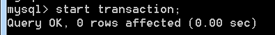
执行如下所示的SQL语句，使lisi减少100块
1
update user set money=money-100 where name='lisi';
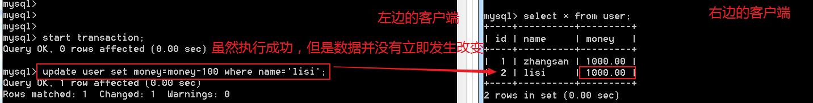
执行如下所示SQL语句，使zhangsan增加100块
1
update user set money=money+100 where name='zhangsan';
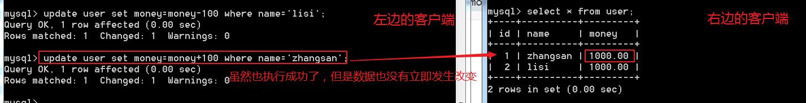
将完整的事务整体提交一次，提交事务的语句：==commit;==
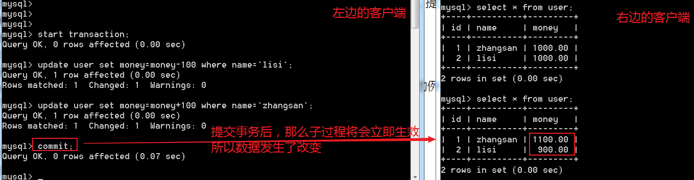
==需求==：使用黑窗口实现失败借钱的例子；
==步骤==：
开启事务，固定的操作语句：==start transaction;==
执行事务当中的子过程
lisi减少100块
1
update user set money=money-100 where name='lisi';
zhangsan增加100块
1
update user set money=money+100 where name='zhangsan';

假设现在虽然执行成功了两个子过程，但是因为某些特殊的原因，要求撤销这个完整的操作，使操作不生效，所以，我们需要执行回滚操作，回滚操作的语句：==rollback;==
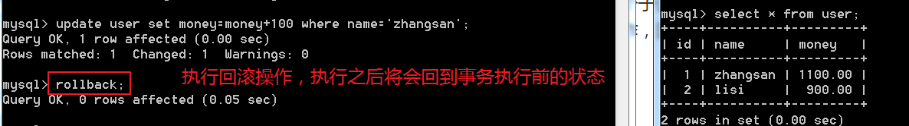
==小结==：
- 事务可以将许多的过程整合成一个完整的过程，只要子过程有一个失败，整个过程都失败，只有当全部的子过程成功，整个过程才认为是成功；
- 如果要使用事务，则数据表的引擎必须是Innodb引擎；
使用PDO实现事务
beginTransaction(); 开启事务
commit(); 提交事务
==需求==：使用PDO实现借钱的例子；
==步骤==：构建code12.php程序文件，代码如下：
1 | $dsn = 'mysql:host=localhost;port=3306;charset=utf8;dbname=test'; |
访问code12.php效果为：
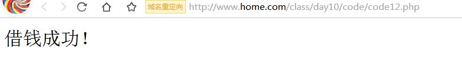
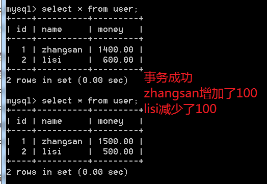
==小结==：
- 我们在程序中，可以通过事务，将零散的过程整合成一个完整的过程，只要完整的过程中任意一个子过程出现问题，则事务将回滚；如果整个事务中的子过程都没有问题，则可以提交事务，使子过程影响的数据立即生效。
4. ==PDO中的预处理技术==
为什么使用预处理技术
在MYSQL中，其标准的执行SQL语句的流程是：
- 构建SQL语句；
- 通过黑窗口客户端发送SQL语句到MYSQL服务器；
- MYSQL服务器接收SQL语句；
- 解析SQL语句；
- 执行SQL语句；
- 将执行的结果返回；
在通常的情况下，无论我们在MYSQL中执行的是不是相同的操作，MYSQL都会每次去重新解析完整的SQL语句，那么，如果当我们的操作，每次执行的都是相同的，只不过数据不同，如下面新增数据的SQL语句：
1 | insert into cz_user values (null, 'zhangsan', 'aa'); |
都是向cz_user表执行新增数据的动作，只不过每次新增的数据不同而已。但是MYSQL依然会每次都完整的去解析这些SQL语句。
这样就造成每次都重复的解析了相同的操作，浪费了一定的时间。所以，在MYSQL中，提供了一种名为预处理的技术，这个技术就是专门用来优化上述问题的技术。
MYSQL客户端中实现预处理技术
不带参数的预处理
涉及的语句语法：
构建预处理语句语法：==prepare 预处理语句名 from “SQL语句”;==
执行预处理语句语法：==execute 预处理语句名;==
删除预处理语句语法：==drop prepare 预处理语句名;==
==需求==：使用预处理技术执行”select * from cz_user”SQL语句；
==步骤==：
构建预处理语句，
1
prepare p1 from "select * from cz_user";
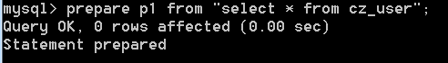
执行预处理语句，
1
execute p1;
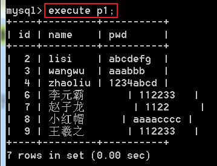
删除预处理语句
1
drop prepare p1;
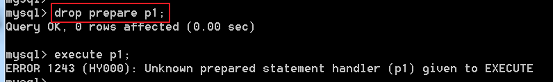
==小结==：
- 实现预处理的步骤有三个：1)准备预处理语句；2）执行预处理语句；3）删除预处理语句；
携带参数的预处理
涉及的语句语法：
构建预处理语句语法：==prepare 预处理语句名 from “SQL语句”;==
新增参数数据语句语法：==set @变量名=变量值;==
执行预处理语句语法：==execute 预处理语句名 using @变量1, @变量2，….,@变量n;==
删除预处理语句语法：==drop prepare 预处理语句名;==
==需求==：使用预处理技术实现往cz_user表中添加数据；
==步骤==：
；准备预处理语句，
1
2#以下的"?"问号表示占位符
prepare p1 from "insert into cz_user values (null, ?, ?)";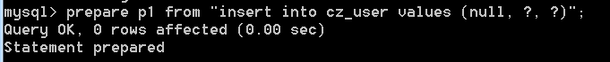
执行预处理语句，
准备数据操作：
1
2
3#定义两个变量保存两个数据值
set @aa='zhangsan';
set @bb='123456';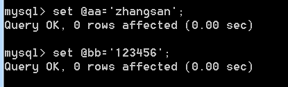
使用准备的数据执行预处理语句：
1
execute p1 using @aa, @bb;
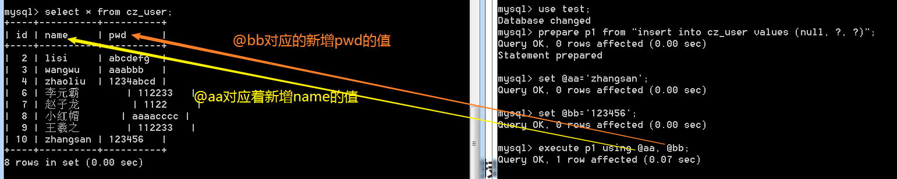
删除预处理语句
1
drop prepare p1;
==小结==：
- 携带参数的预处理比不携带参数的预处理，多了绑定数据的操作；
PDO中实现预处理技术
涉及的方法：
【PDO类中】
prepare(SQL语句) 生成预处理语句
【PDOStatement类中】
bindParam(参数序号， ==&==参数值) 绑定参数
execute([参数集合]) 执行预处理语句
==需求==：使用PDO实现用预处理技术往cz_user表中添加数据，要求
- 使用序号绑定参数的方式实现一次；
- 使用”：字段名”绑定参数的方式实现一次；
- 使用数组绑定参数的方式实现一次；
==解答1==：构建code13.php程序文件，代码如下：
1 | # ----------按序号绑定参数---------- # |
访问code13.php的效果：
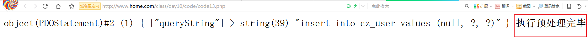
==小结1==：
- bindParam方法的第二个参数是引用传递，所以不能够直接指定数据值，否则将直接报错；
==解答2==：构建code14.php程序文件，代码如下：
1 | # ----------按 ：字段名 绑定参数---------- # |
访问code14.php的效果：
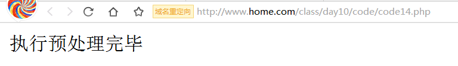
==小结2==：
- 使用 :+字段名 的方式作为占位符，比较好辨认。
==解答3==：构建code15.php程序文件，代码如下：
1 | # ----------按 数组 绑定参数---------- # |
访问code15.php的效果：
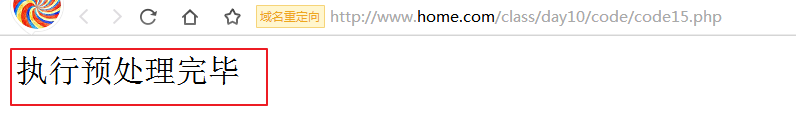
==小结3==：
- 我们还可以通过数组的方式来实现绑定数据；
5. ==PDO中的异常处理==
“异常”两个字的意思，我们可以理解为错误，它可以是执行时出现的错误，也可以是逻辑错误。
PDO中实现异常
在PDO中，封装了一个类用于实现对PDO中的错误进行异常处理方式的处理，这个类名字PDOException，它的本质就是继承了PHP的系统类Exception，所以PHP系统类Exception具有的操作，也都被PDOException所拥有。
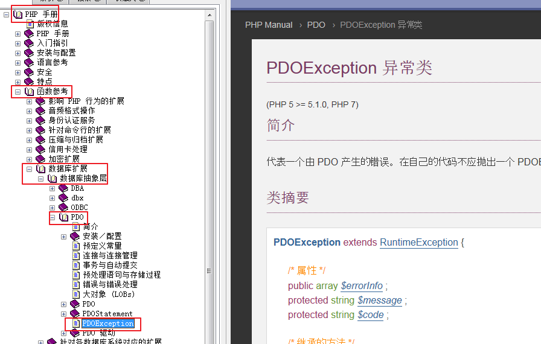
涉及的方法：
【PDO类】
setAttribute(属性名， 属性值) 设置PDO的模式属性
【PDOException类】
getMessage() 获取错误信息
==需求==：使用PDO异常处理方式实现执行查询出错的案例。
==解答==：构建code17.php程序文件，代码如下：
1 | $dsn = 'mysql:host=localhost;port=3306;charset=utf8;dbname=test'; |
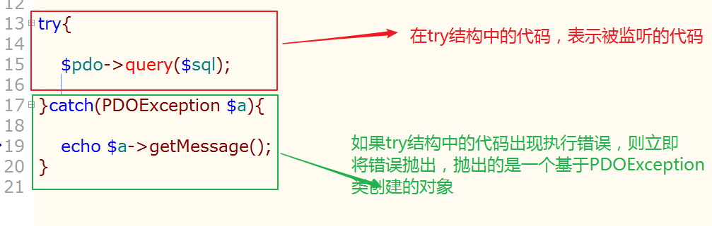
所谓的抛出基于PDOException类的对象，实际上就是将PDOException类的对象赋值给$a。
==小结==：
实现异常错误处理步骤：
第一步，将错误处理模式使用setAttribute方法设置为异常处理模式；
第二步，使用try结构监听执行SQL语句的代码；
第三步，使用catch结构获取错误的信息；
6. 全天总结
连库基本操作：实例化PDO类的对象；
能够执行设置操作（增删改）的方法：PDO类中exec方法
能够执行查询操作的方法：
PDO类中的query方法：执行查询SQL语句
PDOStatement类中的fetch方法：每次执行只解析一条数据，返回的数据默认是一个混合数组（即包含关联又包含索引数组元素的数组），我们可以通过改变第一个参数的值，来达到返回不同数据格式的数据：
PDO::FETCH_ASSOC 返回关联数组
PDO::FETCH_NUM 返回索引数组
PDO::FETCH_BOTH 返回混合数组
PDO::FETCH_OBJ 返回对象数据
PDOStatement类中的fetchAll方法：一次执行返回所有查询得到的数据，数据是一个混合类型的二维数组；
PDO中如何实现事务：
第一步，开启事务 PDO类中的beginTransaction方法
第二步，完成子过程
第三步，根据执行子过程的结果标识（是否有子过程执行失败），来判断应该执行提交操作还是回滚操作
PDO中如何实现预处理技术：
第一步，准备预处理语句：PDO类中的prepare方法
第二步，绑定参数：构建参数数组
第三步，执行预处理语句：PDOStatement类中的execute方法
PDO中如何实现异常处理：
第一步，设置错误处理模式为异常模式： PDO类中的setAttribute方法
第二步，使用try结构监听执行SQL语句的代码
第三步，使用catch结构获取错误相关信息